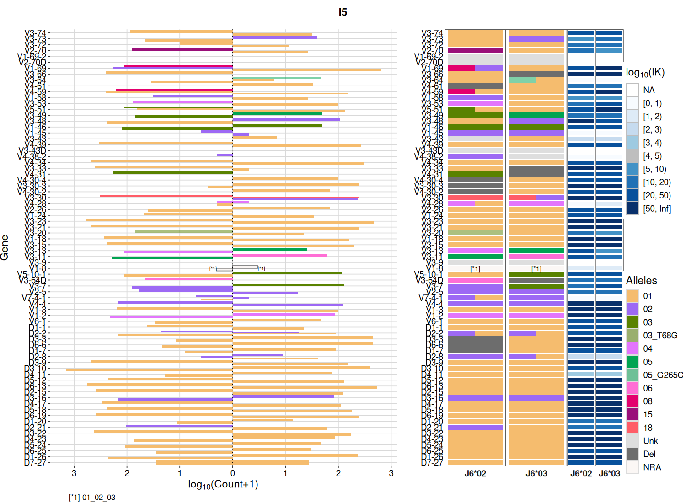
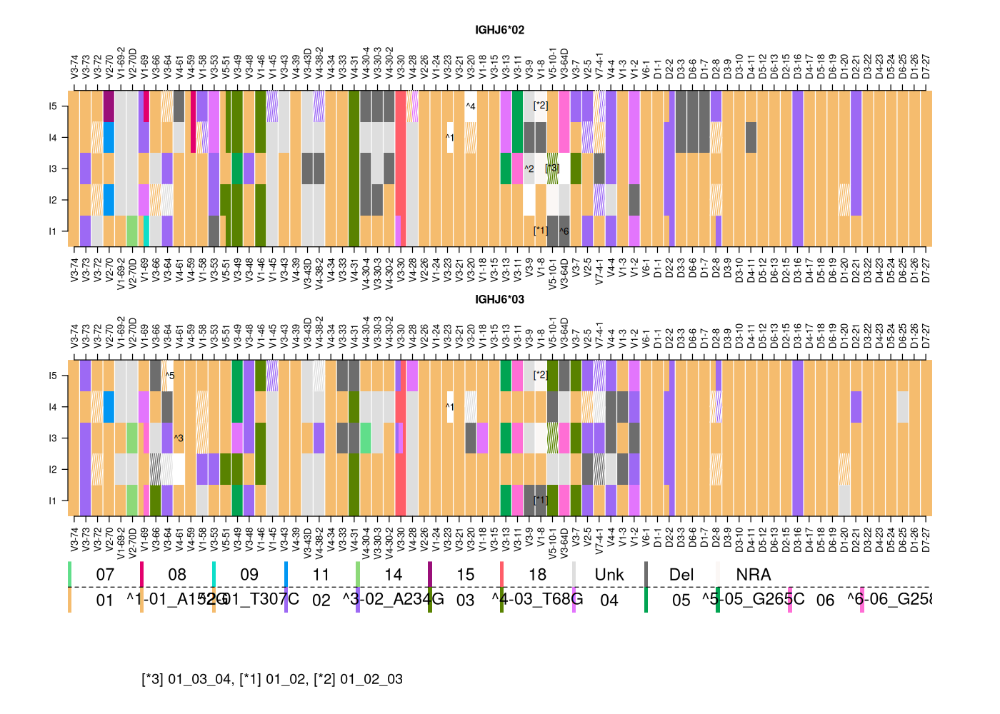
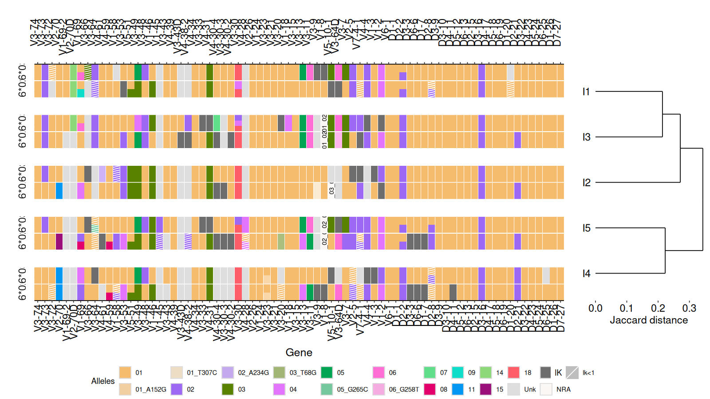
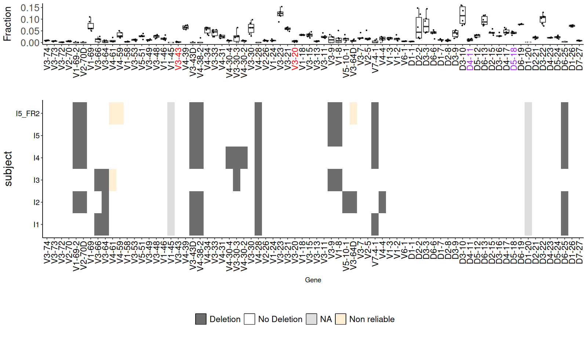
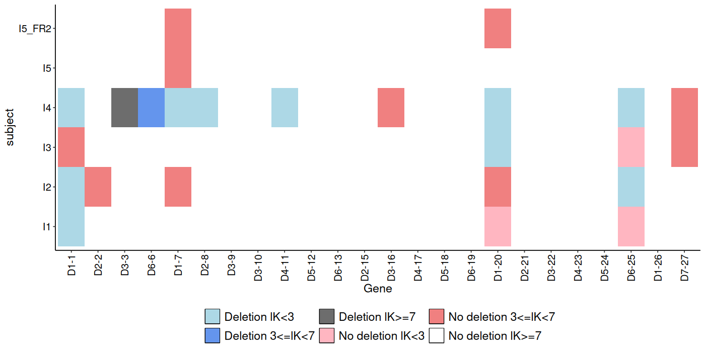
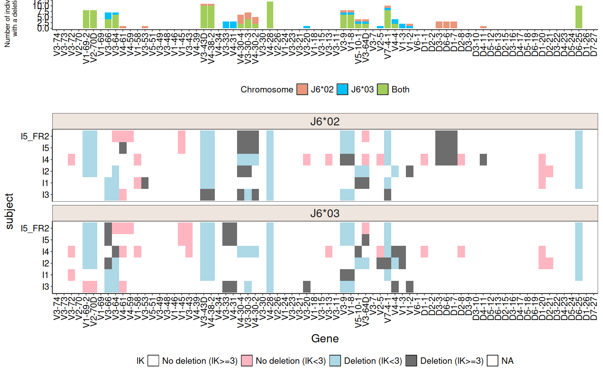

Tutorial¶
This tutorial mirrors the package vignette. It uses the bundled example repertoire samples_db
(several individuals of IGH AIRR-seq data) and the bundled germline references.
Haplotype inference by an anchor gene¶
J gene anchor (IGHJ6)¶
Roughly one third of individuals are heterozygous at IGHJ6, which makes it a natural anchor.
clip_db <- samples_db[samples_db$subject == "I5", ]
haplo_db_J6 <- createFullHaplotype(clip_db,
toHap_col = c("v_call", "d_call"),
hapBy_col = "j_call", hapBy = "IGHJ6",
toHap_GERM = c(HVGERM, HDGERM))
head(haplo_db_J6, 3)
Plot the haplotype map:

The left panel shows per-gene read counts, the middle panels the allele frequencies on each
chromosome (one column per anchor allele), and the right panels the Bayes factor lK for each
assignment.
D gene anchor (IGHD2-21)¶
Any sufficiently heterozygous gene can be used as the anchor:
haplo_db_D2_21 <- createFullHaplotype(clip_db,
toHap_col = "v_call",
hapBy_col = "d_call", hapBy = "IGHD2-21",
toHap_GERM = HVGERM)
Tip
The anchor must be heterozygous with exactly two alleles, each above min_minor_fraction
(default 0.3). Samples that do not meet this are reported and skipped.
Visualizing multiple samples¶
Infer haplotypes for several subjects, then draw a heatmap. hapHeatmap returns the plot together
with an optimal width/height for rendering:
clip_dbs <- samples_db[samples_db$subject != "I5_FR2", ]
haplo_db <- createFullHaplotype(clip_dbs,
toHap_col = c("v_call", "d_call"),
hapBy_col = "j_call", hapBy = "IGHJ6",
toHap_GERM = c(HVGERM, HDGERM))
p.list <- hapHeatmap(haplo_db)
p.list$p # the plot
p.list$width # suggested width
p.list$height # suggested height

A dendrogram clusters samples by haplotype similarity (Jaccard distance). This needs the optional
ggdendro package:

Deletion inference¶
Double-chromosome deletions (binomial test)¶
del_binom_db <- deletionsByBinom(clip_dbs)
del_binom_db <- del_binom_db[grep("IGHJ", del_binom_db$gene, invert = TRUE), ]
plotDeletionsByBinom(del_binom_db)

Single-chromosome deletions (V pooled)¶
nonReliable_Vgenes <- nonReliableVGenes(samples_db)
del_db <- deletionsByVpooled(samples_db, nonReliable_Vgenes = nonReliable_Vgenes)
head(del_db)
plotDeletionsByVpooled(del_db)

Deletion heatmap across subjects¶
del_binom_db <- deletionsByBinom(samples_db, nonReliable_Vgenes = nonReliable_Vgenes)
haplo_db <- createFullHaplotype(samples_db,
toHap_col = c("v_call", "d_call"),
hapBy_col = "j_call", hapBy = "IGHJ6",
toHap_GERM = c(HVGERM, HDGERM),
deleted_genes = del_binom_db,
nonReliable_Vgenes = nonReliable_Vgenes)
deletionHeatmap(haplo_db)

Handling partial V coverage¶
For datasets with partial V coverage (e.g. primer-limited protocols), detect non-reliable V genes and feed them — together with detected deletions — back into the haplotype inference:
clip_db <- samples_db[samples_db$subject == "I5_FR2", ]
nonReliable_Vgenes <- nonReliableVGenes(clip_db)
del_binom_db <- deletionsByBinom(clip_db, chain = "IGH",
nonReliable_Vgenes = nonReliable_Vgenes)
haplo_db <- createFullHaplotype(clip_db,
toHap_col = c("v_call", "d_call"),
hapBy_col = "j_call", hapBy = "IGHJ6",
toHap_GERM = c(HVGERM, HDGERM),
deleted_genes = del_binom_db,
nonReliable_Vgenes = nonReliable_Vgenes)
Interactive output¶
Set html_output = TRUE to obtain an interactive HTML5 plot (requires plotly and htmlwidgets):